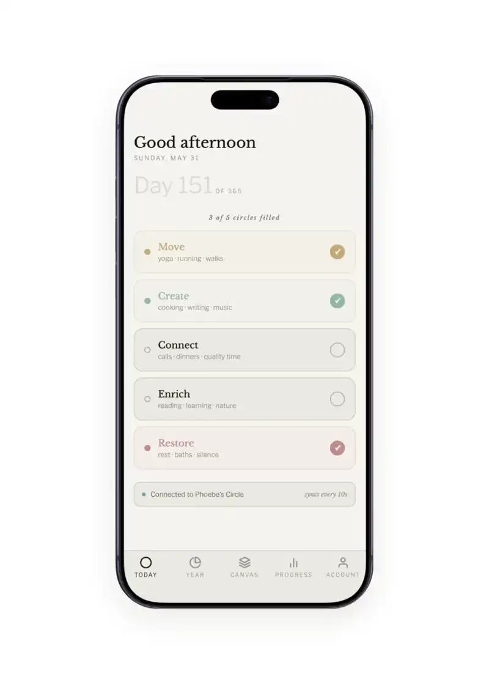
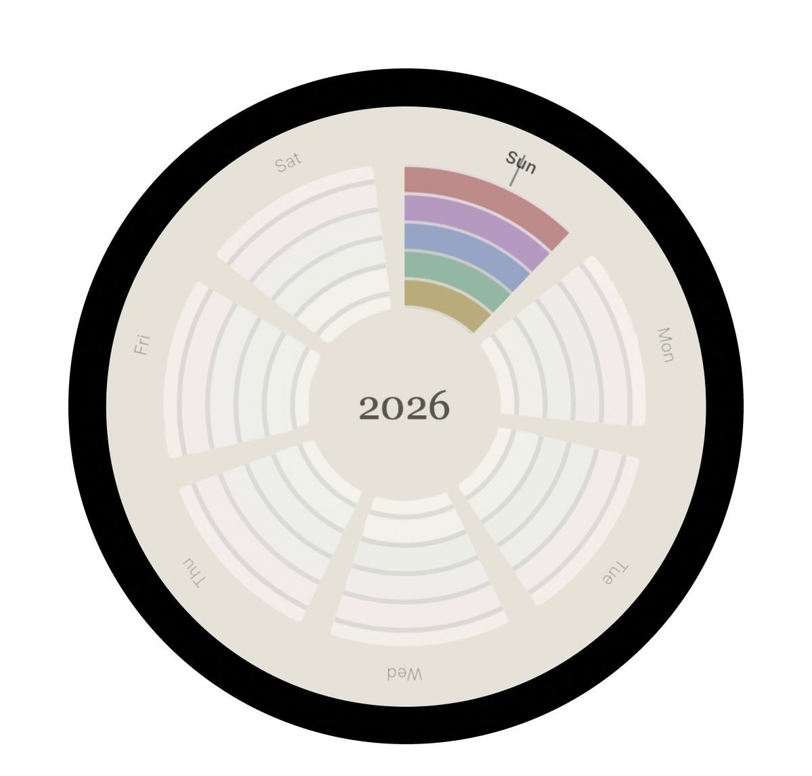
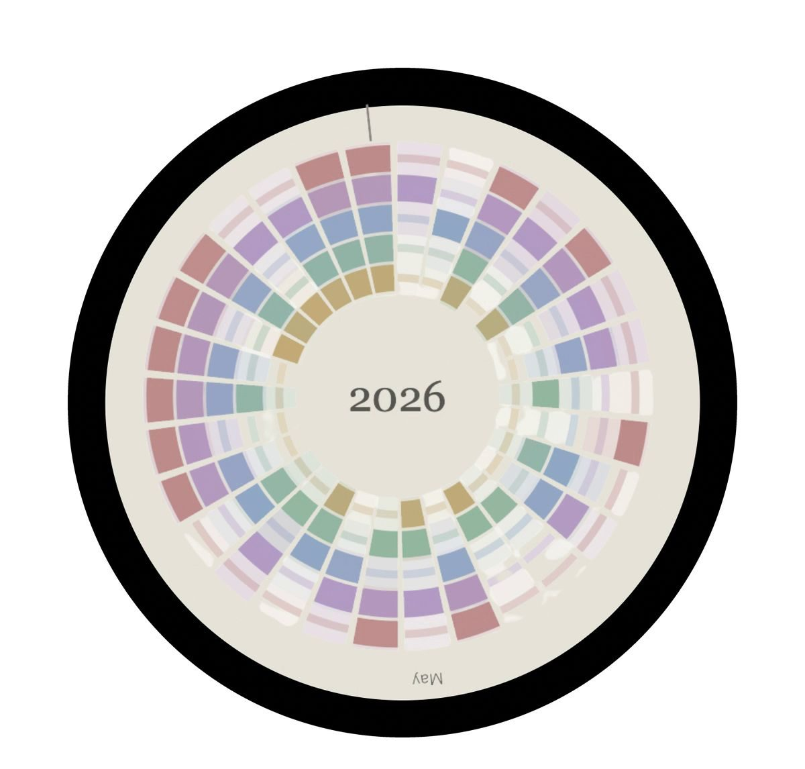
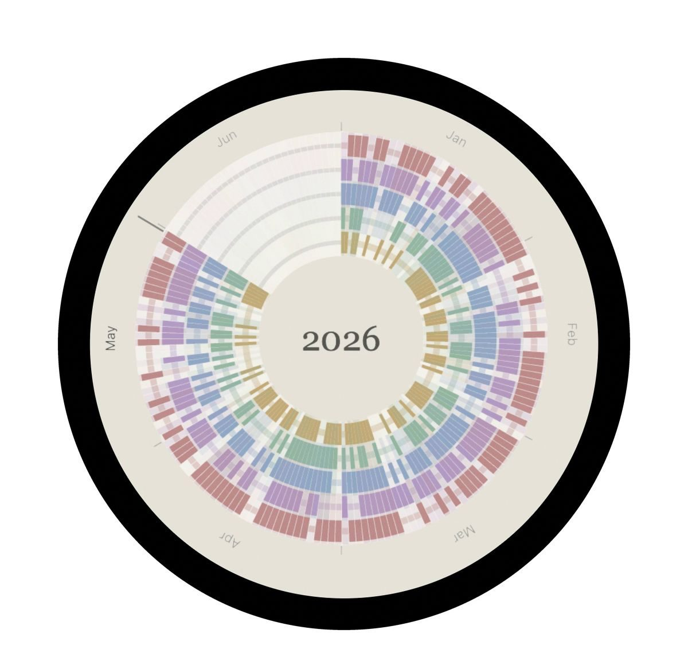
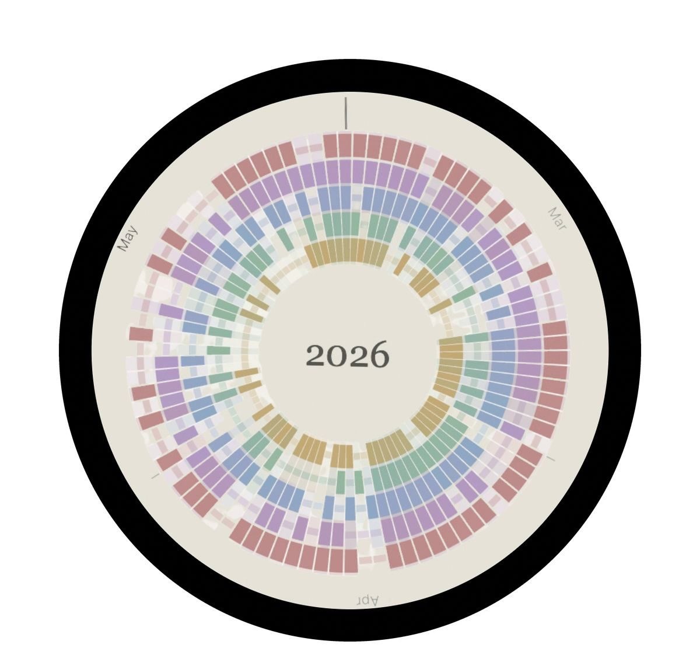
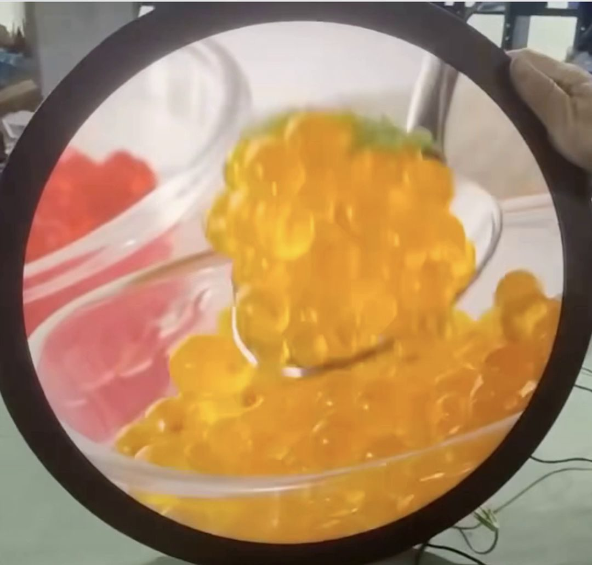
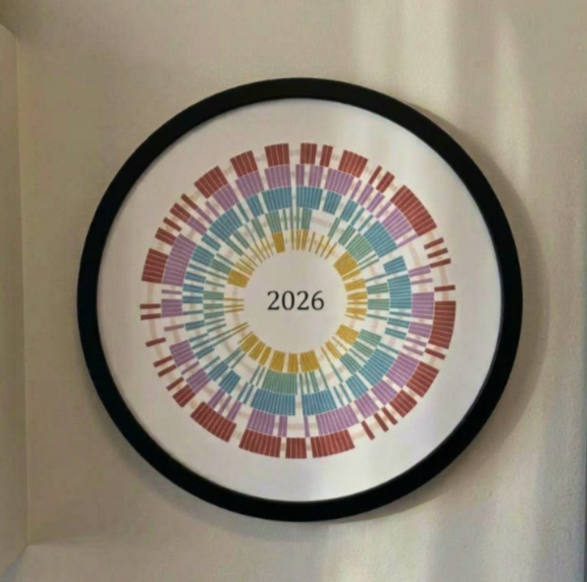
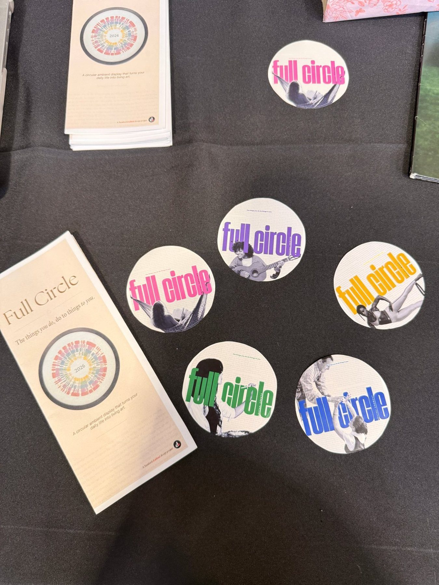
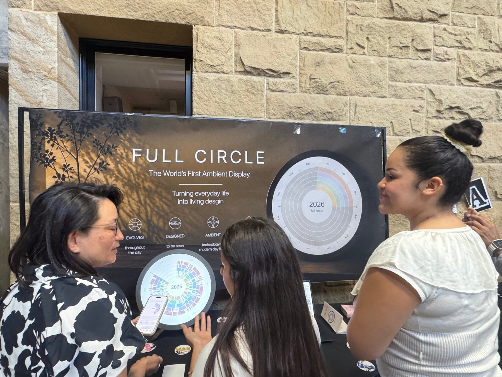

A round display that turns the moments you log into art on your wall.


Record a moment in the app, tagged to one of five pillars: Move, Create, Connect, Enrich and Restore.

A Raspberry Pi turns each entry into color and form.

The circle on your wall fills in slowly, so you see a portrait of how you are living without opening your phone.
There is no shortage of apps that promise to help you build better habits. Most of them track everything, run on streaks and send reminders, and almost all of them end up the same way: forgotten. The novelty fades, the notifications get swiped away, and one missed day quietly turns into “I already skipped, so why bother.” For people trying to change something that matters to them, that cycle can feel worse than never starting.
In our interviews, the reminders that actually stuck were never on a phone. They were the ones people saw every day, like a whiteboard by the desk or a note on the mirror.
How might we help people stay connected to the life they want to live, without making them feel like they’re failing at it?
The shift: instead of tracking, Full Circle is about noticing. Seen from a little distance and in your own space, small choices stop being a checklist and start looking like a pattern, and the pattern gently shows you who you’re becoming.
We split the work evenly as a team of four, so I worked on every stage of the project.
We explored designing for very different people: the ones who already track everything and love a good routine, and the ones on the opposite end who struggle to keep any habit going. Both versions hit the same wall. Seeing everything you hadn’t done was discouraging, and people simply shut it off. So we flipped the idea, and that’s where the name comes from. Full Circle doesn’t count miles or minutes. It celebrates small, meaningful steps toward a balanced life across five pillars: Move, Create, Connect, Enrich and Restore. For me, that might just mean walking to the store instead of driving.
Our first version filled in across an entire year, because we wanted people to see the full picture of how they spend their time. But we didn’t want the circle to feel like a scorecard. We wanted it to feel encouraging. So now you can zoom from a single day to a week, a month and beyond, and start to notice your own patterns: why you moved more this month, which days of the week feel the most balanced, or how a journaling habit that started strong slowly faded away. It’s glanceable from across the room and rich up close.




Because Full Circle lives in your home, it had to do two things at once: look like something you’d want on your wall, and keep your data your own. People told us they didn’t want guests reading their habits. So we designed an art mode that turns your data into color and movement, beautiful to anyone who walks by and meaningful only to you. Explorations included a marble mode, a koi pond where your days swim as fish, and a tree that grows as you log moments.

We started with a small LCD to prove we could drive a display at all, then moved to a 15 inch round screen run by a Raspberry Pi. The art renders in Pygame, and a small Flask server lets the app talk to the circle. A shaky phone hotspot kept dropping the connection, so we switched to a direct USB link.
The real challenge was never the screen. It was getting three systems (the app, the Pi and the display) to talk to each other, so we learned to prove each layer on its own before combining them.
The app has three reflection views: Look back, Look within and Look forward.

We ran a 3-week study to see whether the physical object actually changed anything. One group used the app on its own, and the other lived with the app and Full Circle in their room.
People with the display said they reflected more, and they became noticeably more conscious of how they were spending their days. Having it in view, rather than tucked inside a phone, kept those choices top of mind.

Full Circle is introspective, holistic and inspiring. The identity uses soft gradients that feel like light rather than ink, Libre Baskerville for warmth and Libre Franklin for clarity, carried across posters, the app, stickers and brochures.

We launched Full Circle at the d.school expo, where we spoke with many people who were exactly who we designed it for, and the response was overwhelmingly warm. Beyond the expo, we shared it on Reddit and Instagram, and invited people to try the app, with some living with both the app and the physical display.


Because of the interest and support Full Circle received, our team is currently exploring ways to keep moving the project forward.
Minerva is curious about almost everything, and patient enough to learn it.